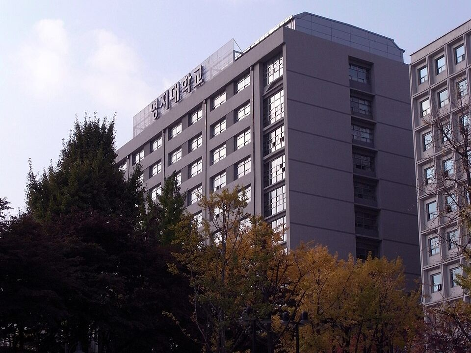

정시는 남은 기간을 어느 과목에 얼마나 쓰느냐의 싸움이고, 그 배분의 기준은 목표 대학의 반영비율입니다. 이 글은 명지대학교 전형 소개가 아니라 정시 반영비율을 "그래서 어느 과목을 먼저 하느냐"로 바꿔 읽는 글입니다. 명지대학교는 계열에 따라 35%를 받는 과목이 국어와 수학 사이에서 바뀌기 때문에, 고3 수학과외나 국어 수업에 시간을 어떻게 나눌지가 지원 계열에 따라 달라집니다.
| 모집계열 | 국어 | 수학 | 영어 | 탐구 |
|---|---|---|---|---|
| 인문사회계열(경영대학 외) | 35% | 25% | 20% | 20% |
| 인문사회계열(경영대학) | 30% | 30% | 20% | 20% |
| 자연공학계열 | 25% | 35% | 20% | 20% |
수능 일반전형 기준, 총점 1,000점이며 활용 지표는 백분위입니다. 탐구는 사회·과학 구분 없이 응시한 과목 가운데 상위 1과목만 반영하고, 자연공학계열은 과학탐구를 선택하면 탐구 반영점수에 10% 가산점이 붙습니다. 영어는 등급별 점수로, 한국사는 가산점으로 들어갑니다. 실기전형 모집단위는 별도 방식을 씁니다.
명지대학교는 인문캠퍼스(서울 서대문구)와 자연캠퍼스(경기 용인 처인구) 두 곳에 있지만, 반영비율을 가르는 것은 캠퍼스가 아니라 단과대학이 속한 계열입니다. 지원하려는 학과가 어느 계열인지는 모집요강의 계열 구분표로 먼저 확인해 두는 것이 순서입니다.
세 줄을 나란히 놓으면 공통점과 차이가 바로 보입니다. 국어와 수학을 합치면 어느 계열이든 60%이고, 영어와 탐구는 모두 20%로 같습니다. 달라지는 것은 60% 안에서 국어와 수학이 무게를 어떻게 나누느냐뿐입니다.
인문사회계열(경영대학 외)은 국어가 35%, 수학이 25%입니다. 백분위 1점이 국어에서는 3.5점, 수학에서는 2.5점이 되니, 같은 노력을 들인다면 국어 쪽이 1.4배 무겁습니다. 이 계열이 목표라면 남은 기간의 첫 번째 시간은 국어에 두는 것이 맞고, 고3 국어과외를 받고 있다면 수업 비중을 국어 쪽으로 기울여도 됩니다. 다만 수학 25%는 결코 작은 숫자가 아니어서, 수학을 놓으면 그 25%가 그대로 빠집니다. "국어 먼저, 수학은 지금 점수를 지키면서"가 기본 배분입니다.
자연공학계열은 정확히 반대입니다. 수학 35%, 국어 25%라서 수학 백분위 1점이 국어보다 1.4배 무겁습니다. 공부 순서는 수학이 먼저이고, 국어는 흔들리지 않을 만큼 유지하는 과목이 됩니다.
인문사회계열 안에서도 경영대학은 따로 계산합니다. 국어와 수학이 각각 30%로 어느 한쪽이 더 무겁지 않습니다. 국어가 강한 학생은 경영대학보다 다른 인문사회 모집단위에서 점수가 더 잘 나오고, 반대로 수학이 국어보다 나은 인문계 학생은 경영대학 쪽이 상대적으로 유리하게 계산됩니다.
국어와 수학 점수 차가 큰 학생이라면 같은 성적표로 두 방식의 총점을 각각 계산해 보는 것만으로도 지원 판단이 달라질 수 있습니다. 공부 순서로 바꾸면, 경영대학이 목표일 때는 두 과목 중 더 약한 쪽을 먼저 끌어올리는 것이 총점을 가장 빨리 올립니다.
탐구 반영비율은 20%인데, 두 과목 평균이 아니라 잘 본 한 과목만 들어갑니다. 탐구 한 과목이 전체의 20%, 1,000점 가운데 200점을 혼자 차지한다는 뜻입니다. 영어와 같은 무게입니다.
그래서 판단은 분명합니다. 명지대학교만 놓고 보면 탐구 두 과목을 똑같이 끌고 갈 이유가 없고, 자신 있는 한 과목에 시간을 몰아 백분위를 최대한 끌어올리는 것이 맞습니다. 나머지 한 과목은 응시 요건을 채우는 수준으로 두되, 시험 당일 컨디션에 따라 순위가 뒤집힐 수 있으니 완전히 손을 놓지는 않습니다.
자연공학계열은 한 가지를 더 따져야 합니다. 사회·과학 구분 없이 고를 수 있지만, 과학탐구를 선택하면 탐구 반영점수에 10%가 더해집니다. 백분위 85를 받았다면 사회탐구는 170점, 과학탐구는 187점으로 계산되어 17점 차이가 납니다. 사회탐구로 같은 점수를 내려면 백분위가 93~94점까지 올라가야 하는 셈이라, 자연공학계열을 노리는 학생에게는 과학탐구 쪽이 기본값입니다.
영어는 20%이고 등급별 반영점수로 들어갑니다. 반영점수는 1등급 100, 2등급 98, 3등급 96, 4등급 90, 5등급 80점이고, 여기에 2를 곱해 총점에 더합니다. 1,000점 기준으로 다시 쓰면 1→2등급, 2→3등급은 각각 4점 차이지만 3→4등급은 12점, 4→5등급은 20점으로 간격이 갑자기 커집니다.
이 표에서 나오는 결론은 학생의 현재 등급에 따라 갈립니다.
한국사는 등급별 가산점으로 더해지는데, 등급 간 차이가 소수점 단위라 총점을 크게 흔들지는 않습니다. 다만 등급이 낮을수록 가산점이 줄어드니 기본 개념 정리만큼은 해 두는 것이 좋습니다.
수학은 확률과 통계, 미적분, 기하 가운데 하나를 고르면 되고, 자연공학계열도 특정 과목을 요구하지 않습니다. 국어도 화법과 작문, 언어와 매체 중 하나입니다. 명지대학교만 목표라면 선택과목은 자신 있는 쪽을 고르면 됩니다. 함께 지원할 다른 대학이 미적분이나 기하를 지정한다면 그 조건이 우선이니, 지원 대학 목록을 같이 놓고 정해야 합니다.
👉 서대문구 수학과외 선생님 · 처인구 영어과외 선생님 · 서대문구 지역 과외 안내 · 처인구 지역 과외 안내
학생 수준에 맞는 선생님을 24시간 안에 추천해 드려요. 상담은 무료입니다.